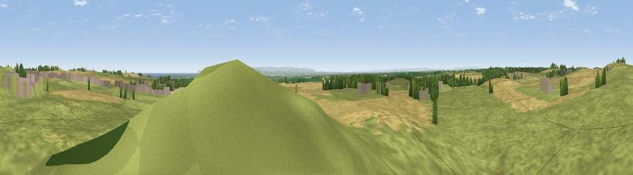

Viewpoint near Elwick
#14470 in England · top 40% of its area beats it · near ElwickWhere it is
The exact computed spot (NZ 44175 32575). Click the marker for map links.
The view, rendered

A 360° render of this exact spot computed from the terrain model, tree cover and land cover — summer colours, afternoon light, calibrated against photographs of famous viewpoints. Real trees, hedges and buildings will differ in detail.
The panorama
Grey silhouette: terrain skyline in each direction (720 bearings, Earth curvature and refraction included). Dashed green: skyline with trees (+15 m) and buildings (+8 m) as obstacles. Blue strip: how far the ground is visible on each bearing.
Where the view opens
Wedge length = distance to the farthest visible ground on that bearing (vegetation-aware). Rings at 10, 25 and 50 km.
What fills the view
66% grassland · 28% cropland · 3% woodland · 2% built-up ·
Angular shares of the visible panorama (visual magnitude), not map area. Landscape diversity 0.37 (0–1 Shannon).
Key numbers
More beautiful places nearby
The staircase of upgrades: each row has a higher view potential than everything closer. Driving times are estimates from straight-line distance, calibrated against real road routing — check an actual route before setting out.
| Place | Direction | Drive | Score |
|---|---|---|---|
| Viewpoint near Elwick | N · 1 km | ~4 min | 70.5 |
| Viewpoint near Quarrington Hill | WNW · 12 km | ~23 min | 73.1 |
| Viewpoint near Easington Colliery | N · 13 km | ~24 min | 74.4 |
| Viewpoint near Lazenby | SE · 19 km | ~33 min | 86.4 |
| Warsett Hill | ESE · 27 km | ~44 min | 86.8 |
| Viewpoint near Easington | ESE · 33 km | ~50 min | 90.2 |
| The Knoll | SSW · 454 km | ~423 min | 91.0 |
54.68629, -1.31630 · source: screening · position refined by local search. Computed location — check access rights before visiting.